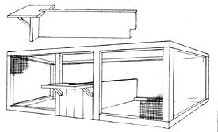
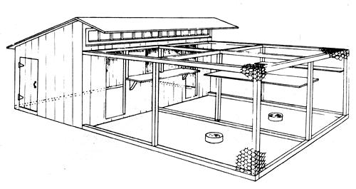
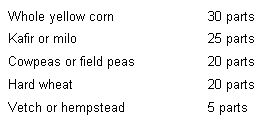
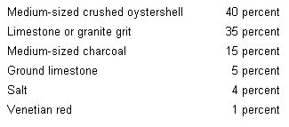
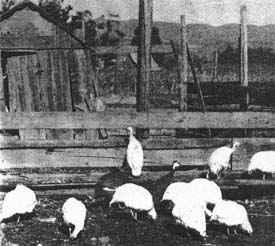
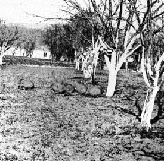
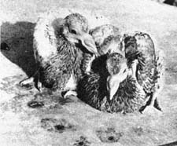

Homestead Squab And Guinea Production
Here's an excerpt on squab and guinea fowl production from Jack Widmer's book, Practical Animal Husbandry
By the Mother Earth News editors
July/August 1973
Squab Production/Guinea Fowl
Squab Production
The production of squab is practically no trick at all. Pigeons are not subject to the diseases that make turkey raising somewhat hazardous, they do not require the mixing of feeds, and once mated they will be productive for at least five years. The adult members of the loft feed their own young and take excellent care of them, thus eliminating the need for incubators or brooders. They produce squab that are ready for the table at one month of age, and will do this at a very reasonable figure. They cause little worry to the producer and are very clean when provided with bathing water daily and are amusing birds to have on the farm.
Pigeons require very little space . . . a 12' X 12' shed together with a 12' X 12' flyway will house 30 pairs and each couple will produce from 12 to 16 squabs annually and will do this on less than 90 pounds of feed per twosome. Then too, pigeons will produce the year around thus making it unnecessary to kill, dress and store a number of birds at one time as is the case with chicken friers, turkeys, ducks and geese. Yet squab are very adaptable to deepfreeze storage and will keep almost indefinitely at zero degrees Fahrenheit.
SUITABLE BREEDS FOR SQUAB PRODUCTION
There are a vast number of breeds of pigeons, many of which are suitable for the production of squabs. Of them all the King breed together with the Carneau are the most popular and are the most extensively used by commercial producers. The King is a prolific, full-breasted bird, does very well in confined quarters, and produces the largest of squabs ranging in weight from 16 to 24 ounces at 25 to 30 days of age. The Carneau, a French breed, is also very prolific . . . however, their squabs are usually smaller than the King.
The remaining breeds that have been used as meat pigeons are the French Mondain, Homer and Swiss Mondain. Choice of breed will therefore depend on the personal taste of the squab raiser and on the breeds that are available in any given community. Though pairs of pigeons may be shipped long distances, the beginner might find it advisable to purchase breeding stock close to home so as to overcome some of the handicaps of selection.
BREEDING STOCK
Throughout this work we have continually stressed the the importance of dealing with reputable breeders when purchasing foundation stock, and although this is of importance in the purchase of other members of the barnyard kingdom, it is absolutely imperative in the selection of pigeons. If this is not done, success of squab raising is very doubtful for it is most difficult to determine either the age or sex of pigeons and the uninitiated can very easily wind up with a number of old birch and most of them males. Therefore, pigeons must never be purchased except from breeders who are willing to guarantee both the sex and age of the birds.
It is best to purchase young pigeons that are about to maw for the first time. These birds should be in the neighborhood of eight months of age and if young birds are procured, they will have a useful breeding life of from five to six years.
MATING
Mating of pigeons may sometimes be a problem and there are two general methods: [l] Natural mating. [2] Forced mating In the first method, all the pigeons, are placed hi a coinmon pigeon roost and are permitted to do their own selecting. As they pair off they should be separated from the rest until all the matings have been accomplished, after which time they can be again permitted to be together. In the second method, a known male and a known female are confined to a small pen and will usually mate in due time after considerable strutting and general noise making.
Pigeons usually mate in pairs and usually remain true to their mates for life although there are numerous records of matrimonial strife in the pigeon roost, which usually ends in complete reconciliations and excellent egg production. Some pigeons will mate again after having lost their original mate. However, this is not always the case and there is but one cure for such faithfulness . . . pigeon pie.
Several pairs (up to 30) may live in the same roost and flyway. Each pair should be supplied with a double nest-a partitioned orange crate is ideal-and each nest should have a platform attached to the front of the nest so as to facilitate landings.
Their housing facilities may be very simple. In warm climates the pigeon roost may be a low shed opening to the south and leading directly onto the flyway, while in more severe climates it is advisable to wall up the south side (together with the other three) allowing for ample window space so that the interior of the pigeon house will have plenty of light. Ventilation is also very important and the house should be so constructed that windows may be removed during the summer months.
The flyway need not be excessively large-a 12' X 12' flyway will accommodate at least 30 pairs-and it may be constructed of chicken wire at least six feet in height and the entire contraption should be so constructed that rats may be kept out of both house and flyway. Roosts should be provided in the flyway, and nesting boxes so placed inside the house as to make them convenient for the feeder. Of course passageways from the flyway to the nests must be open at all times, and houses constructed so that all feeding may be accomplished either from the outside of the pen or inside the houses from a narrow alleyway . . . which will eliminate much of the work of pigeon feeding. As to size of house to build, it might be suggested that three square feet of floor space be supplied for each pair of pigeons maintained.
Once mated, there is little that need be done except to permit nature to take its course. Females will lay an egg, will then skip a day, and lay another. That's all for egg production for they will incubate but two eggs at a time. This incubation period is about 17 days and both parents sit on the nest taking turns between feeding, bathing and exercising.
Once hatched, the squabs will start eating immediately, and this feeding of the young is also handled by both male and female parent. All the pigeon fancier need do is to provide the feed for the adults . . . they will feed their squabs shortly after they themselves are fed and should not be disturbed during this time. They feed the squabs on a thick, creamy mixture often termed "pigeon milk" produced in the crops of the adults and fed directly into the mouths of the young.
Females usually start laying the second pair of eggs before the first pair are old enough to leave the nest, and it is for this reason that twin nests are provided for each pair. Again, the male will assist the female in the building of the nest, and the pigeon grower must be ready to move the first egg from the old nest (which contains the original squabs) should the female lay her egg in the original nest. It should be placed in the second nest and the female will then lay her second egg in the new nest after a day's interval. Of course, the adult's day is then spent in a dual fashion . . . feeding the hatched squabs and the incubation of the second set of eggs. This work is divided between male and female who seem to divide these duties very handily and the pigeon fancier need not be concerned with these domestic problems.
FEEDING OF PIGEONS
Feeding of pigeons is different from that of other fowl inasmuch as it is not necessary to feed them any mash. Instead, pigeons are fed only on a grain mixture and they may be fed in a, self-feeder if this is desired. They should be fed a relatively high protein feed-somewhat over 14% available protein-and minerals should be fed in a separate mixture.
An excellent pigeon ration may be made up as follows:
This feed contains over 14% protein and during warm summer months the corn may be cut down and the kafir increased as it is not necessary to feed heating rations during very warm weather.
In addition to the above a mineral mixture-made up as follows-should be fed in a separate feeder:
This mineral mixture is kept before the flock at all times as they will not overeat and no harm can come from their helping themselves to all they require. Of course commercial mixtures of both feed and minerals may be purchased by those who do not care to mix their own:
If the birds are fed in a self-feeder, this feeder should be filled at least every other day. Most pigeon fanciers prefer to hand-feed their birds in troughs that are placed inside the pigeon house-usually at the base of the alleyway partition-so that it is not necessary for the attendant to enter the pigeon enclosure. They should be fed twice daily and are given all that they will clean up within an hour after feeding. Of course fresh water is supplied-drinking fountains save time in this regard-and a bathing pan is set in the yard, the water changed daily. Pigeons love to bathe and insist on clean water. Here on Toowoomba, we have a small door leading from the flyway to the outside through which we pass the bathing pans, thus eliminating the need for going into the pen.
SANITATION
It is difficult to produce squab under any but the most sanitary conditions. The problem is simplified if one is prepared to devote a few minutes each day to the pigeons' maintenance. Floors of pigeon houses should be of board or concrete construction so that they may be cleaned at least once a week, and flyway floors should be covered with fine gravel so that they may be raked out at least once every ten days.
Pigeons are not subject to many diseases. However, the prevention of the diseases that do affect them is much simpler than is their cure. Nests should be cleaned out after each pair of squabs has been butchered, and plenty of clean, coarse straw should be kept on hand so that the pigeons may arrange fresh nests for each setting of eggs.
Pigeons that show signs of lice should be dusted with sodium fluoride (we make a practice of doing this twice annually despite the fact that we have never had lice among the birds) and the entire house should be sprayed with some sort of cresol solution at least twice a year.
Watering and feeding facilities should be kept clean and leftover feed should not be permitted to collect in the bottom of the feeders as these grains will soon sour and will be detrimental to the flock. Bathing water should be changed daily (for the birds will often drink from their baths) and fresh gravel should be scattered on the floor of the flyway at least twice each year. All this may sound complicated and time consuming. However, the beginner will be amazed at the small amount of time necessary if filth is never permitted to collect.
THE FINISHED PRODUCT
Squabs are at their prime at from 26 to 30 days and should be collected from the nests the evening before butchering. This will permit the craws to empty and will lessen the labor of cleaning. The squabs are usually dry-picked and are butchered before pin feathers have a chance to form under the wings. All body temperature should be removed by placing the picked squabs in cold water and if properly wrapped they will keep in a deepfreeze unit at zero degrees Fahrenheit from 8 to 10 months.
Now and then it will be necessary for the pigeon fancier to maintain a few squabs for replacements, or he may wish to increase his number of pairs (as we did) and will want to save some of the young. This is no problem for the adults will continue to feed the young until they voluntarily leave the nest and begin to eat by themselves. It is wise to keep squabs from the best producers in the flock and to mark them with leg bands while they are still in the nest. It must also be remembered that usually one of the pair of squabs is larger than the other and that the larger one is usually the male. If, then, the larger is marked with one colored band and the smaller with another, the final determination of sex is often facilitated.
Should the country dweller produce more squabs than he requires for his personal use he will soon discover that there is a very good market for his surplus. Many pigeon fanciers have developed an excellent local trade for both squabs and breeding-age stock, and the disposal of surplus stock is usually a simple matter.
Guinea Fowl
Guinea fowl have been successfully raised on many small establishments and although they have several disadvantages, they are interesting to produce and we have always maintained a few of these handsome birds. They are often served as a substitute for game and although their meat is reasonably dark, they do have a distinctive flavor that has made them a favorite with many of discriminating taste.
It is true that they have a wild, harsh cry that some find objectionable, but they do act as excellent watchdogs for the barnyard, will fight off chicken hawks and will sound the alarm if intruders are present on the establishment. They are not as easy to rear as are chickens, ducks or geese, and they are often hard to catch. They are difficult to produce unless they have considerable freedom of range, yet once started they do very well with a minimum of care. In some sections of England they have been used as replacements for grouse, for after they have reverted to a wild state they make excellent game birds.
SPECIES OF GUINEA FOWL
There are several varieties of guinea fowl which derive their name from the country of Guinea, on the west coast of Africa. In their native country they are found in dozens of varieties. However, the domestic fowl found in the United States are the Pearl, White and Lavender, of which the Pearl seems the most popular.
BEGINNING WITH GUINEAS
Getting a start with guineas may prove quite a problem. It is often difficult to purchase adult birds, and it is usually equally difficult to find hatcheries that will supply day-old guineas. Yet the approach to guineas may again be classified into three categories, the choice of which will usually depend on availability: [1] purchase of day-old guineas; [2] purchase of adults ready to breed; [3] purchase of setting eggs for incubation under either chicken or turkey hens, or artificial incubators.
DAY-OLD GUINEAS
Day-old guineas must be brooded under either a setting chicken or turkey hen for it is impossible to brooder them in an artificial brooder as they often perish in close confinement . . . which is necessary with artificial brooding. In addition to chicken and turkey hens, considerable success has been had by some breeders when guinea eggs have been placed under Japanese Silkies and the various breeds of banties.
Upon arrival from the hatchery the guinea chicks are placed under the hen much in the same manner as prescribed under "Day-old Chicks" (see MOTHER NO. 19). A chicken hen will care for from 18 to 24 guineas, while the larger turkey hen will rear from 25 to 30. Hens must be freed from lice before they are used for this purpose, and the hens should be shut up in brooding coops so that they will not lead the young through damp grass-thus permitting the sensitive young guineas to catch cold-for at least the first three or four days. After that, the hen may be released and should be allowed to roam at will, for the young guineas will stay close to her at all times.
Guineas may be fed much in the same manner as young chicks. However, they will require less feed than chicks for they are natural grazers and utilize all manner of weed and grass seed as well as being extremely apt at the catching of insects.
HOME-GROWN GUINEAS
When mature guineas are purchased the buyer must be very careful to obtain birds of both sexes. Guineas are not easily distinguishable as to sex, and one requires considerable experience before being able to tell them apart. The male does possess a larger helmet than the female and the wattles are also larger in the male in comparison to the size of the head. There are those people who claim that they can tell the sexes apart by the sound of the cry, but we have never become so astute.
Guineas, in the natural state, are monogamous. However, in captivity, they will breed in trios, and if no other males are present, some guinea males will breed up to ten females.
The breeding birds are fed a laying ration (as prescribed under "Chickens" in MOTHER NO. 19) during the laying season and eggs should be collected daily. Some guineas that have been reared under chickens or turkey hens will use laying houses, but most guineas prefer to lay in nests of their own choosing and these nests must be located before the eggs have had a chance to spoil. Two eggs should be left in each nest as nest eggs and the balance of the eggs should be collected and stored at a maximum temperature of 60 degrees Fahrenheit.
Guinea hens will lay from 25 to 30 eggs before becoming broody, and if eggs are collected regularly, they may lay as many as 50 to 60 eggs during the laying season which usually runs from late April to late July. Some fanciers permit the guinea hens to set on their own eggs . . . however, by their wild nature they are poor nesters and poorer mothers. The eggs, therefore, should be set under either chicken or turkey hens and eggs should be sprinkled with warm water every four days. Guinea eggs may be successfully hatched in an artificial incubator, but guineas seem to do better when a hen is used.
Chicken hens will set on from 15 to 18 guinea eggs and turkey hens upwards from 20. The incubation period is about 26 days. As with ducks and geese, chicken hens must be confined to the nest after the first of the guineas begin to pip so as to give the late hatchers a chance to hatch before the hen leaves the nest.
After the guineas are from two to three weeks old they may be fed on cracked grains instead of mash and as they grow to eight weeks they may be fed whole grains to an advantage. They soon learn to roost and will do so in trees or on some man-made arrangements, and if they have been brooded by a chicken hen they may even be induced to roost in a chicken house. Young guineas become very attached to their foster mother and often will remain with her until they have become fully grown. This attachment is very helpful when one wants to catch the guineas for those raised in the wild state are most difficult to apprehend without the aid of a shotgun.
THE FINISHED PRODUCT
Guinea fowl are usually butchered at about three months of age when they should weigh from two to three pounds. At this size they make delicious broilers and if kept beyond this age their meat has a tendency to become tough. They are butchered much in the same manner as turkeys and will keep very well in deepfreeze units.
It is true that everyone who tries to raise guineas will not have the best of results for they do require considerable range and do better when they have natural cover such as found in river and creek bottoms, etc. It must always be remembered that they are still on the wild side of life and not every faun is suitable for their production.
But for those who like to experiment, and for those who do not object to having the birds run loose about the place, the guinea fowl will supply excellent food for the table. They are certainly worth trying and they require little care, no housing and very little feed beyond that which they will find for themselves.
Back in 1949-before factory farming and the "pump 'em full of chemicals" school of agriculture blitzed the countrya fellow named Jack Widmer wrote a little book called PRACTICAL ANIMAL HUSBANDRY. Now that manual wasn't what you'd call completely exhaustive, the writing style wasn't the best and a few of the ideas it advanced-such as confining laying hens in cages-were later refined into the kind of automated farming that so many of us are fighting against these days.
Still, PRACTICAL ANIMAL HUSBANDRY contained a good deal of basic information that today's "homesteaders" all too often need and don't know where to find. I'm pleased, then, that the publisher of the book, Charles Scribner's Sons, has granted me permission to reprint excerpts from this out-of-print manual. I think that many of my readers will find the following information both interesting and informative.-MOTHER.
Excerpts from PRACTICAL. ANIMAL HUSBANDRY by Jack Widmer are reprinted by permission of Charles Scribner's Sons. Copyright 1949 by Charles Scribner's Sons.

A pair of squab at 24 days of age
|
 An ideal double nesting box for pigeons. Note the landing platform between the two nests. Each pair of pigeons should be supplied with one of these double nests and each nest should be at least 2 feet square. Solid floors should be provided and ample short straw available so that the birds may construct their own laying nests. |
 This pigeon loft and screened flyway makes an ideal manner in which to produce squabs. A loft 12 X 12 feet, with a flyway the same size will house 30 pair of pigeons |
 White guineas are becoming increasingly popular in the Western States. |
|
 A flock of Pearl Guineas in a pear orchard. Guineas do very well if not held in close confinement and will not venture too far distant from their home. |
 A pair of squab at 24 days of age |
 |
|
 |
|
|